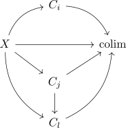
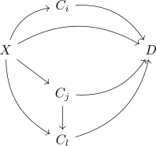
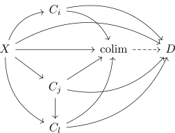
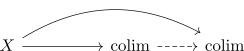

colimit in a coslice category
Proposition
Let $\mathcal{C}$ be a (sufficiently) cocomplete category, $X \in \mathrm{Ob}(\mathcal{C})$ an object. Suppose $I$ is an indexing category, $I: \mathcal{I} \rightarrow X / \mathcal{C}$ a coslice-category valued functor.
Then the colimit in $X / \mathcal{C}$ is given by the colimit of the diagram

in $\mathcal{C}$ after adding the morphisms $X \rightarrow C_i$ and then taking the induced morphism
as object.
Proof
Suppose there exists an object $X \rightarrow D$ and a natural transformation from $I$ to the constant diagram functor $\Delta D$, i.e. a diagram of the form

Then there exists an induced morphism

commuting
note that especially

commutes.
Therefore the morphism is welldefined in $X / \mathcal{C}$.
Analagously each triangle commutes, thus the induced morphisms form a diagram
uniqueness
Suppose there exists two morphisms $\psi, \varphi: \mathrm{colim} \rightarrow D$ making the diagram commute in $X / \mathcal{C}$. Then especially the diagram in $\mathcal{C}$ commutes. Thus it follows by universal property that the morphisms
are equal
see also: